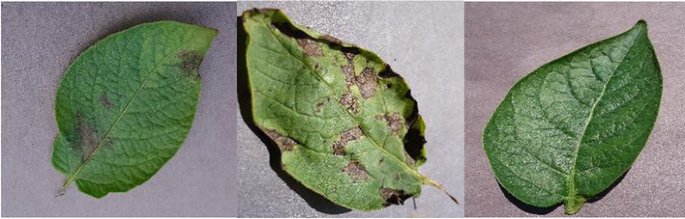

This is potato leaf disease prediction system. Using deep learning and image analysis techniques, this project aims to help farmers identify diseases in potato plants early on, improving crop health and yield.


This project aims to understand how people feel based on their messages on social media, like tweets or Facebook posts. By analyzing these messages, we can determine if they are positive, negative, or neutral. This information is valuable for businesses to gauge customer feelings, monitor brand reputation, or predict trends.
Heart Attack Risk Prediction web app developed using Streamlit. This intuitive application allows users to input relevant health metrics and receive personalized predictions regarding their risk of experiencing a heart attack.
This project aims to understand how people feel based on their messages on social media, like tweets or Facebook posts. By analyzing these messages, we can determine if they are positive, negative, or neutral. This information is valuable for businesses to gauge customer feelings, monitor brand reputation, or predict trends.
This project aims to help users discover movies they might enjoy by recommending films based on their preferences. It uses data on movies and user interactions (such as ratings or viewing history) to suggest new movies.
Currently Working On It Will Update Soon...😄